32 Ranking
Values of categories, compared and ordered: bars, lollipops, circular bars, parallel coordinates and radar charts (the R Graph Gallery ranking pages - barplot, lollipop, circular barplot, spider, parallel - and the data-to-viz caveats).
Bars are a strip chart: the levels sit on the categorical axis - {:x :country :y :value} draws vertical bars, {:x :value :y :country} horizontal ones (:level-axis decides when both or neither axis is categorical). Order comes from the data (levels in first-appearance order: left to right, bottom to top), the band scale’s :order-by (a statistic of each level’s rows, :descending reverses it; see Order and direction) or an explicit :domain.
(ns use-cases.ranking
(:require [clojure.string :as str]
[fastmath.random :as r]
[fastmath.stats :as stats]
[cljplot2.chart :as chart]
[cljplot2.core :as plot]
[cljplot2.data.levels :as levels]
[notebook-utils :as nu]))(def weapons
"Weapon exports per country - the rows with a value."
(filterv :value (nu/dataset :weapons)))| country | value |
|---|---|
| United States | 12394 |
| Russia | 6148 |
| Germany (FRG) | 1653 |
| France | 2162 |
| United Kingdom | 1214 |
| China | 1131 |
| Netherlands | 1167 |
| Italy | 660 |
| Israel | 1263 |
| Ukraine | 240 |
| Spain | 814 |
| Sweden | 83 |
| Switzerland | 186 |
| Canada | 87 |
| South Korea | 587 |
| Belarus | 23 |
| Norway | 134 |
| Turkey | 244 |
| South Africa | 74 |
| Czech Republic | 110 |
| Poland | 3 |
| Belgium | 12 |
| Australia | 97 |
| Brazil | 45 |
| Finland | 58 |
| Japan | 2 |
| Slovakia | 22 |
| Denmark | 12 |
| Austria | 22 |
| Jordan | 77 |
| UAE | 72 |
| Unknown supplier(s) | 7 |
| Indonesia | 102 |
| Iran | 10 |
| Portugal | 56 |
| India | 56 |
| Serbia | 2 |
| Others | 77 |
(def top-20 (vec (take 20 (sort-by :value > weapons))))| country | value |
|---|---|
| United States | 12394 |
| Russia | 6148 |
| France | 2162 |
| Germany (FRG) | 1653 |
| Israel | 1263 |
| United Kingdom | 1214 |
| Netherlands | 1167 |
| China | 1131 |
| Spain | 814 |
| Italy | 660 |
| South Korea | 587 |
| Turkey | 244 |
| Ukraine | 240 |
| Switzerland | 186 |
| Norway | 134 |
| Czech Republic | 110 |
| Indonesia | 102 |
| Australia | 97 |
| Canada | 87 |
| Sweden | 83 |
(def top-10 (vec (take 10 top-20)))| country | value |
|---|---|
| United States | 12394 |
| Russia | 6148 |
| France | 2162 |
| Germany (FRG) | 1653 |
| Israel | 1263 |
| United Kingdom | 1214 |
| Netherlands | 1167 |
| China | 1131 |
| Spain | 814 |
| Italy | 660 |
(defn- level-value
"A country's value - the `:value` of its one row: the score of a band scale's `:order-by` (ascending - on
horizontal bars the largest ends on top)."
[rows]
(:value (first rows)))#'use-cases.ranking/level-value(def iris (nu/dataset :iris))| sepal-length | sepal-width | petal-length | petal-width | species |
|---|---|---|---|---|
| 5.1 | 3.5 | 1.4 | 0.2 | setosa |
| 4.9 | 3 | 1.4 | 0.2 | setosa |
| 4.7 | 3.2 | 1.3 | 0.2 | setosa |
| 4.6 | 3.1 | 1.5 | 0.2 | setosa |
| 5 | 3.6 | 1.4 | 0.2 | setosa |
| 5.4 | 3.9 | 1.7 | 0.4 | setosa |
| 4.6 | 3.4 | 1.4 | 0.3 | setosa |
| 5 | 3.4 | 1.5 | 0.2 | setosa |
| 4.4 | 2.9 | 1.4 | 0.2 | setosa |
| 4.9 | 3.1 | 1.5 | 0.1 | setosa |
| 5.4 | 3.7 | 1.5 | 0.2 | setosa |
| 4.8 | 3.4 | 1.6 | 0.2 | setosa |
| 4.8 | 3 | 1.4 | 0.1 | setosa |
| 4.3 | 3 | 1.1 | 0.1 | setosa |
| 5.8 | 4 | 1.2 | 0.2 | setosa |
| 5.7 | 4.4 | 1.5 | 0.4 | setosa |
| 5.4 | 3.9 | 1.3 | 0.4 | setosa |
| 5.1 | 3.5 | 1.4 | 0.3 | setosa |
| 5.7 | 3.8 | 1.7 | 0.3 | setosa |
| 5.1 | 3.8 | 1.5 | 0.3 | setosa |
| 5.4 | 3.4 | 1.7 | 0.2 | setosa |
| 5.1 | 3.7 | 1.5 | 0.4 | setosa |
| 4.6 | 3.6 | 1 | 0.2 | setosa |
| 5.1 | 3.3 | 1.7 | 0.5 | setosa |
| 4.8 | 3.4 | 1.9 | 0.2 | setosa |
| 5 | 3 | 1.6 | 0.2 | setosa |
| 5 | 3.4 | 1.6 | 0.4 | setosa |
| 5.2 | 3.5 | 1.5 | 0.2 | setosa |
| 5.2 | 3.4 | 1.4 | 0.2 | setosa |
| 4.7 | 3.2 | 1.6 | 0.2 | setosa |
| 4.8 | 3.1 | 1.6 | 0.2 | setosa |
| 5.4 | 3.4 | 1.5 | 0.4 | setosa |
| 5.2 | 4.1 | 1.5 | 0.1 | setosa |
| 5.5 | 4.2 | 1.4 | 0.2 | setosa |
| 4.9 | 3.1 | 1.5 | 0.2 | setosa |
| 5 | 3.2 | 1.2 | 0.2 | setosa |
| 5.5 | 3.5 | 1.3 | 0.2 | setosa |
| 4.9 | 3.6 | 1.4 | 0.1 | setosa |
| 4.4 | 3 | 1.3 | 0.2 | setosa |
| 5.1 | 3.4 | 1.5 | 0.2 | setosa |
| 5 | 3.5 | 1.3 | 0.3 | setosa |
| 4.5 | 2.3 | 1.3 | 0.3 | setosa |
| 4.4 | 3.2 | 1.3 | 0.2 | setosa |
| 5 | 3.5 | 1.6 | 0.6 | setosa |
| 5.1 | 3.8 | 1.9 | 0.4 | setosa |
| 4.8 | 3 | 1.4 | 0.3 | setosa |
| 5.1 | 3.8 | 1.6 | 0.2 | setosa |
| 4.6 | 3.2 | 1.4 | 0.2 | setosa |
| 5.3 | 3.7 | 1.5 | 0.2 | setosa |
| 5 | 3.3 | 1.4 | 0.2 | setosa |
| 7 | 3.2 | 4.7 | 1.4 | versicolor |
| 6.4 | 3.2 | 4.5 | 1.5 | versicolor |
| 6.9 | 3.1 | 4.9 | 1.5 | versicolor |
| 5.5 | 2.3 | 4 | 1.3 | versicolor |
| 6.5 | 2.8 | 4.6 | 1.5 | versicolor |
| 5.7 | 2.8 | 4.5 | 1.3 | versicolor |
| 6.3 | 3.3 | 4.7 | 1.6 | versicolor |
| 4.9 | 2.4 | 3.3 | 1 | versicolor |
| 6.6 | 2.9 | 4.6 | 1.3 | versicolor |
| 5.2 | 2.7 | 3.9 | 1.4 | versicolor |
| 5 | 2 | 3.5 | 1 | versicolor |
| 5.9 | 3 | 4.2 | 1.5 | versicolor |
| 6 | 2.2 | 4 | 1 | versicolor |
| 6.1 | 2.9 | 4.7 | 1.4 | versicolor |
| 5.6 | 2.9 | 3.6 | 1.3 | versicolor |
| 6.7 | 3.1 | 4.4 | 1.4 | versicolor |
| 5.6 | 3 | 4.5 | 1.5 | versicolor |
| 5.8 | 2.7 | 4.1 | 1 | versicolor |
| 6.2 | 2.2 | 4.5 | 1.5 | versicolor |
| 5.6 | 2.5 | 3.9 | 1.1 | versicolor |
| 5.9 | 3.2 | 4.8 | 1.8 | versicolor |
| 6.1 | 2.8 | 4 | 1.3 | versicolor |
| 6.3 | 2.5 | 4.9 | 1.5 | versicolor |
| 6.1 | 2.8 | 4.7 | 1.2 | versicolor |
| 6.4 | 2.9 | 4.3 | 1.3 | versicolor |
| 6.6 | 3 | 4.4 | 1.4 | versicolor |
| 6.8 | 2.8 | 4.8 | 1.4 | versicolor |
| 6.7 | 3 | 5 | 1.7 | versicolor |
| 6 | 2.9 | 4.5 | 1.5 | versicolor |
| 5.7 | 2.6 | 3.5 | 1 | versicolor |
| 5.5 | 2.4 | 3.8 | 1.1 | versicolor |
| 5.5 | 2.4 | 3.7 | 1 | versicolor |
| 5.8 | 2.7 | 3.9 | 1.2 | versicolor |
| 6 | 2.7 | 5.1 | 1.6 | versicolor |
| 5.4 | 3 | 4.5 | 1.5 | versicolor |
| 6 | 3.4 | 4.5 | 1.6 | versicolor |
| 6.7 | 3.1 | 4.7 | 1.5 | versicolor |
| 6.3 | 2.3 | 4.4 | 1.3 | versicolor |
| 5.6 | 3 | 4.1 | 1.3 | versicolor |
| 5.5 | 2.5 | 4 | 1.3 | versicolor |
| 5.5 | 2.6 | 4.4 | 1.2 | versicolor |
| 6.1 | 3 | 4.6 | 1.4 | versicolor |
| 5.8 | 2.6 | 4 | 1.2 | versicolor |
| 5 | 2.3 | 3.3 | 1 | versicolor |
| 5.6 | 2.7 | 4.2 | 1.3 | versicolor |
| 5.7 | 3 | 4.2 | 1.2 | versicolor |
| 5.7 | 2.9 | 4.2 | 1.3 | versicolor |
| 6.2 | 2.9 | 4.3 | 1.3 | versicolor |
| 5.1 | 2.5 | 3 | 1.1 | versicolor |
| 5.7 | 2.8 | 4.1 | 1.3 | versicolor |
| … | … | … | … | … |
(def mtcars (nu/dataset :mtcars))| model | mpg | cyl | disp | hp | drat | wt | qsec | vs | am | gear | carb |
|---|---|---|---|---|---|---|---|---|---|---|---|
| Mazda RX4 | 21 | 6 | 160 | 110 | 3.9 | 2.62 | 16.46 | 0 | 1 | 4 | 4 |
| Mazda RX4 Wag | 21 | 6 | 160 | 110 | 3.9 | 2.875 | 17.02 | 0 | 1 | 4 | 4 |
| Datsun 710 | 22.8 | 4 | 108 | 93 | 3.85 | 2.32 | 18.61 | 1 | 1 | 4 | 1 |
| Hornet 4 Drive | 21.4 | 6 | 258 | 110 | 3.08 | 3.215 | 19.44 | 1 | 0 | 3 | 1 |
| Hornet Sportabout | 18.7 | 8 | 360 | 175 | 3.15 | 3.44 | 17.02 | 0 | 0 | 3 | 2 |
| Valiant | 18.1 | 6 | 225 | 105 | 2.76 | 3.46 | 20.22 | 1 | 0 | 3 | 1 |
| Duster 360 | 14.3 | 8 | 360 | 245 | 3.21 | 3.57 | 15.84 | 0 | 0 | 3 | 4 |
| Merc 240D | 24.4 | 4 | 146.7 | 62 | 3.69 | 3.19 | 20 | 1 | 0 | 4 | 2 |
| Merc 230 | 22.8 | 4 | 140.8 | 95 | 3.92 | 3.15 | 22.9 | 1 | 0 | 4 | 2 |
| Merc 280 | 19.2 | 6 | 167.6 | 123 | 3.92 | 3.44 | 18.3 | 1 | 0 | 4 | 4 |
| Merc 280C | 17.8 | 6 | 167.6 | 123 | 3.92 | 3.44 | 18.9 | 1 | 0 | 4 | 4 |
| Merc 450SE | 16.4 | 8 | 275.8 | 180 | 3.07 | 4.07 | 17.4 | 0 | 0 | 3 | 3 |
| Merc 450SL | 17.3 | 8 | 275.8 | 180 | 3.07 | 3.73 | 17.6 | 0 | 0 | 3 | 3 |
| Merc 450SLC | 15.2 | 8 | 275.8 | 180 | 3.07 | 3.78 | 18 | 0 | 0 | 3 | 3 |
| Cadillac Fleetwood | 10.4 | 8 | 472 | 205 | 2.93 | 5.25 | 17.98 | 0 | 0 | 3 | 4 |
| Lincoln Continental | 10.4 | 8 | 460 | 215 | 3 | 5.424 | 17.82 | 0 | 0 | 3 | 4 |
| Chrysler Imperial | 14.7 | 8 | 440 | 230 | 3.23 | 5.345 | 17.42 | 0 | 0 | 3 | 4 |
| Fiat 128 | 32.4 | 4 | 78.7 | 66 | 4.08 | 2.2 | 19.47 | 1 | 1 | 4 | 1 |
| Honda Civic | 30.4 | 4 | 75.7 | 52 | 4.93 | 1.615 | 18.52 | 1 | 1 | 4 | 2 |
| Toyota Corolla | 33.9 | 4 | 71.1 | 65 | 4.22 | 1.835 | 19.9 | 1 | 1 | 4 | 1 |
| Toyota Corona | 21.5 | 4 | 120.1 | 97 | 3.7 | 2.465 | 20.01 | 1 | 0 | 3 | 1 |
| Dodge Challenger | 15.5 | 8 | 318 | 150 | 2.76 | 3.52 | 16.87 | 0 | 0 | 3 | 2 |
| AMC Javelin | 15.2 | 8 | 304 | 150 | 3.15 | 3.435 | 17.3 | 0 | 0 | 3 | 2 |
| Camaro Z28 | 13.3 | 8 | 350 | 245 | 3.73 | 3.84 | 15.41 | 0 | 0 | 3 | 4 |
| Pontiac Firebird | 19.2 | 8 | 400 | 175 | 3.08 | 3.845 | 17.05 | 0 | 0 | 3 | 2 |
| Fiat X1-9 | 27.3 | 4 | 79 | 66 | 4.08 | 1.935 | 18.9 | 1 | 1 | 4 | 1 |
| Porsche 914-2 | 26 | 4 | 120.3 | 91 | 4.43 | 2.14 | 16.7 | 0 | 1 | 5 | 2 |
| Lotus Europa | 30.4 | 4 | 95.1 | 113 | 3.77 | 1.513 | 16.9 | 1 | 1 | 5 | 2 |
| Ford Pantera L | 15.8 | 8 | 351 | 264 | 4.22 | 3.17 | 14.5 | 0 | 1 | 5 | 4 |
| Ferrari Dino | 19.7 | 6 | 145 | 175 | 3.62 | 2.77 | 15.5 | 0 | 1 | 5 | 6 |
| Maserati Bora | 15 | 8 | 301 | 335 | 3.54 | 3.57 | 14.6 | 0 | 1 | 5 | 8 |
| Volvo 142E | 21.4 | 4 | 121 | 109 | 4.11 | 2.78 | 18.6 | 1 | 1 | 4 | 2 |
(def diamonds (nu/dataset :diamonds))| carat | cut | color | clarity | depth | table | price | x | y | z |
|---|---|---|---|---|---|---|---|---|---|
| 0.23 | Ideal | E | SI2 | 61.5 | 55 | 326 | 3.95 | 3.98 | 2.43 |
| 0.21 | Premium | E | SI1 | 59.8 | 61 | 326 | 3.89 | 3.84 | 2.31 |
| 0.23 | Good | E | VS1 | 56.9 | 65 | 327 | 4.05 | 4.07 | 2.31 |
| 0.29 | Premium | I | VS2 | 62.4 | 58 | 334 | 4.2 | 4.23 | 2.63 |
| 0.31 | Good | J | SI2 | 63.3 | 58 | 335 | 4.34 | 4.35 | 2.75 |
| 0.24 | Very Good | J | VVS2 | 62.8 | 57 | 336 | 3.94 | 3.96 | 2.48 |
| 0.24 | Very Good | I | VVS1 | 62.3 | 57 | 336 | 3.95 | 3.98 | 2.47 |
| 0.26 | Very Good | H | SI1 | 61.9 | 55 | 337 | 4.07 | 4.11 | 2.53 |
| 0.22 | Fair | E | VS2 | 65.1 | 61 | 337 | 3.87 | 3.78 | 2.49 |
| 0.23 | Very Good | H | VS1 | 59.4 | 61 | 338 | 4 | 4.05 | 2.39 |
| 0.3 | Good | J | SI1 | 64 | 55 | 339 | 4.25 | 4.28 | 2.73 |
| 0.23 | Ideal | J | VS1 | 62.8 | 56 | 340 | 3.93 | 3.9 | 2.46 |
| 0.22 | Premium | F | SI1 | 60.4 | 61 | 342 | 3.88 | 3.84 | 2.33 |
| 0.31 | Ideal | J | SI2 | 62.2 | 54 | 344 | 4.35 | 4.37 | 2.71 |
| 0.2 | Premium | E | SI2 | 60.2 | 62 | 345 | 3.79 | 3.75 | 2.27 |
| 0.32 | Premium | E | I1 | 60.9 | 58 | 345 | 4.38 | 4.42 | 2.68 |
| 0.3 | Ideal | I | SI2 | 62 | 54 | 348 | 4.31 | 4.34 | 2.68 |
| 0.3 | Good | J | SI1 | 63.4 | 54 | 351 | 4.23 | 4.29 | 2.7 |
| 0.3 | Good | J | SI1 | 63.8 | 56 | 351 | 4.23 | 4.26 | 2.71 |
| 0.3 | Very Good | J | SI1 | 62.7 | 59 | 351 | 4.21 | 4.27 | 2.66 |
| 0.3 | Good | I | SI2 | 63.3 | 56 | 351 | 4.26 | 4.3 | 2.71 |
| 0.23 | Very Good | E | VS2 | 63.8 | 55 | 352 | 3.85 | 3.92 | 2.48 |
| 0.23 | Very Good | H | VS1 | 61 | 57 | 353 | 3.94 | 3.96 | 2.41 |
| 0.31 | Very Good | J | SI1 | 59.4 | 62 | 353 | 4.39 | 4.43 | 2.62 |
| 0.31 | Very Good | J | SI1 | 58.1 | 62 | 353 | 4.44 | 4.47 | 2.59 |
| 0.23 | Very Good | G | VVS2 | 60.4 | 58 | 354 | 3.97 | 4.01 | 2.41 |
| 0.24 | Premium | I | VS1 | 62.5 | 57 | 355 | 3.97 | 3.94 | 2.47 |
| 0.3 | Very Good | J | VS2 | 62.2 | 57 | 357 | 4.28 | 4.3 | 2.67 |
| 0.23 | Very Good | D | VS2 | 60.5 | 61 | 357 | 3.96 | 3.97 | 2.4 |
| 0.23 | Very Good | F | VS1 | 60.9 | 57 | 357 | 3.96 | 3.99 | 2.42 |
| 0.23 | Very Good | F | VS1 | 60 | 57 | 402 | 4 | 4.03 | 2.41 |
| 0.23 | Very Good | F | VS1 | 59.8 | 57 | 402 | 4.04 | 4.06 | 2.42 |
| 0.23 | Very Good | E | VS1 | 60.7 | 59 | 402 | 3.97 | 4.01 | 2.42 |
| 0.23 | Very Good | E | VS1 | 59.5 | 58 | 402 | 4.01 | 4.06 | 2.4 |
| 0.23 | Very Good | D | VS1 | 61.9 | 58 | 402 | 3.92 | 3.96 | 2.44 |
| 0.23 | Good | F | VS1 | 58.2 | 59 | 402 | 4.06 | 4.08 | 2.37 |
| 0.23 | Good | E | VS1 | 64.1 | 59 | 402 | 3.83 | 3.85 | 2.46 |
| 0.31 | Good | H | SI1 | 64 | 54 | 402 | 4.29 | 4.31 | 2.75 |
| 0.26 | Very Good | D | VS2 | 60.8 | 59 | 403 | 4.13 | 4.16 | 2.52 |
| 0.33 | Ideal | I | SI2 | 61.8 | 55 | 403 | 4.49 | 4.51 | 2.78 |
| 0.33 | Ideal | I | SI2 | 61.2 | 56 | 403 | 4.49 | 4.5 | 2.75 |
| 0.33 | Ideal | J | SI1 | 61.1 | 56 | 403 | 4.49 | 4.55 | 2.76 |
| 0.26 | Good | D | VS2 | 65.2 | 56 | 403 | 3.99 | 4.02 | 2.61 |
| 0.26 | Good | D | VS1 | 58.4 | 63 | 403 | 4.19 | 4.24 | 2.46 |
| 0.32 | Good | H | SI2 | 63.1 | 56 | 403 | 4.34 | 4.37 | 2.75 |
| 0.29 | Premium | F | SI1 | 62.4 | 58 | 403 | 4.24 | 4.26 | 2.65 |
| 0.32 | Very Good | H | SI2 | 61.8 | 55 | 403 | 4.35 | 4.42 | 2.71 |
| 0.32 | Good | H | SI2 | 63.8 | 56 | 403 | 4.36 | 4.38 | 2.79 |
| 0.25 | Very Good | E | VS2 | 63.3 | 60 | 404 | 4 | 4.03 | 2.54 |
| 0.29 | Very Good | H | SI2 | 60.7 | 60 | 404 | 4.33 | 4.37 | 2.64 |
| 0.24 | Very Good | F | SI1 | 60.9 | 61 | 404 | 4.02 | 4.03 | 2.45 |
| 0.23 | Ideal | G | VS1 | 61.9 | 54 | 404 | 3.93 | 3.95 | 2.44 |
| 0.32 | Ideal | I | SI1 | 60.9 | 55 | 404 | 4.45 | 4.48 | 2.72 |
| 0.22 | Premium | E | VS2 | 61.6 | 58 | 404 | 3.93 | 3.89 | 2.41 |
| 0.22 | Premium | D | VS2 | 59.3 | 62 | 404 | 3.91 | 3.88 | 2.31 |
| 0.3 | Ideal | I | SI2 | 61 | 59 | 405 | 4.3 | 4.33 | 2.63 |
| 0.3 | Premium | J | SI2 | 59.3 | 61 | 405 | 4.43 | 4.38 | 2.61 |
| 0.3 | Very Good | I | SI1 | 62.6 | 57 | 405 | 4.25 | 4.28 | 2.67 |
| 0.3 | Very Good | I | SI1 | 63 | 57 | 405 | 4.28 | 4.32 | 2.71 |
| 0.3 | Good | I | SI1 | 63.2 | 55 | 405 | 4.25 | 4.29 | 2.7 |
| 0.35 | Ideal | I | VS1 | 60.9 | 57 | 552 | 4.54 | 4.59 | 2.78 |
| 0.3 | Premium | D | SI1 | 62.6 | 59 | 552 | 4.23 | 4.27 | 2.66 |
| 0.3 | Ideal | D | SI1 | 62.5 | 57 | 552 | 4.29 | 4.32 | 2.69 |
| 0.3 | Ideal | D | SI1 | 62.1 | 56 | 552 | 4.3 | 4.33 | 2.68 |
| 0.42 | Premium | I | SI2 | 61.5 | 59 | 552 | 4.78 | 4.84 | 2.96 |
| 0.28 | Ideal | G | VVS2 | 61.4 | 56 | 553 | 4.19 | 4.22 | 2.58 |
| 0.32 | Ideal | I | VVS1 | 62 | 55.3 | 553 | 4.39 | 4.42 | 2.73 |
| 0.31 | Very Good | G | SI1 | 63.3 | 57 | 553 | 4.33 | 4.3 | 2.73 |
| 0.31 | Premium | G | SI1 | 61.8 | 58 | 553 | 4.35 | 4.32 | 2.68 |
| 0.24 | Premium | E | VVS1 | 60.7 | 58 | 553 | 4.01 | 4.03 | 2.44 |
| 0.24 | Very Good | D | VVS1 | 61.5 | 60 | 553 | 3.97 | 4 | 2.45 |
| 0.3 | Very Good | H | SI1 | 63.1 | 56 | 554 | 4.29 | 4.27 | 2.7 |
| 0.3 | Premium | H | SI1 | 62.9 | 59 | 554 | 4.28 | 4.24 | 2.68 |
| 0.3 | Premium | H | SI1 | 62.5 | 57 | 554 | 4.29 | 4.25 | 2.67 |
| 0.3 | Good | H | SI1 | 63.7 | 57 | 554 | 4.28 | 4.26 | 2.72 |
| 0.26 | Very Good | F | VVS2 | 59.2 | 60 | 554 | 4.19 | 4.22 | 2.49 |
| 0.26 | Very Good | E | VVS2 | 59.9 | 58 | 554 | 4.15 | 4.23 | 2.51 |
| 0.26 | Very Good | D | VVS2 | 62.4 | 54 | 554 | 4.08 | 4.13 | 2.56 |
| 0.26 | Very Good | D | VVS2 | 62.8 | 60 | 554 | 4.01 | 4.05 | 2.53 |
| 0.26 | Very Good | E | VVS1 | 62.6 | 59 | 554 | 4.06 | 4.09 | 2.55 |
| 0.26 | Very Good | E | VVS1 | 63.4 | 59 | 554 | 4 | 4.04 | 2.55 |
| 0.26 | Very Good | D | VVS1 | 62.1 | 60 | 554 | 4.03 | 4.12 | 2.53 |
| 0.26 | Ideal | E | VVS2 | 62.9 | 58 | 554 | 4.02 | 4.06 | 2.54 |
| 0.38 | Ideal | I | SI2 | 61.6 | 56 | 554 | 4.65 | 4.67 | 2.87 |
| 0.26 | Good | E | VVS1 | 57.9 | 60 | 554 | 4.22 | 4.25 | 2.45 |
| 0.24 | Premium | G | VVS1 | 62.3 | 59 | 554 | 3.95 | 3.92 | 2.45 |
| 0.24 | Premium | H | VVS1 | 61.2 | 58 | 554 | 4.01 | 3.96 | 2.44 |
| 0.24 | Premium | H | VVS1 | 60.8 | 59 | 554 | 4.02 | 4 | 2.44 |
| 0.24 | Premium | H | VVS2 | 60.7 | 58 | 554 | 4.07 | 4.04 | 2.46 |
| 0.32 | Premium | I | SI1 | 62.9 | 58 | 554 | 4.35 | 4.33 | 2.73 |
| 0.7 | Ideal | E | SI1 | 62.5 | 57 | 2757 | 5.7 | 5.72 | 3.57 |
| 0.86 | Fair | E | SI2 | 55.1 | 69 | 2757 | 6.45 | 6.33 | 3.52 |
| 0.7 | Ideal | G | VS2 | 61.6 | 56 | 2757 | 5.7 | 5.67 | 3.5 |
| 0.71 | Very Good | E | VS2 | 62.4 | 57 | 2759 | 5.68 | 5.73 | 3.56 |
| 0.78 | Very Good | G | SI2 | 63.8 | 56 | 2759 | 5.81 | 5.85 | 3.72 |
| 0.7 | Good | E | VS2 | 57.5 | 58 | 2759 | 5.85 | 5.9 | 3.38 |
| 0.7 | Good | F | VS1 | 59.4 | 62 | 2759 | 5.71 | 5.76 | 3.4 |
| 0.96 | Fair | F | SI2 | 66.3 | 62 | 2759 | 6.27 | 5.95 | 4.07 |
| 0.73 | Very Good | E | SI1 | 61.6 | 59 | 2760 | 5.77 | 5.78 | 3.56 |
| 0.8 | Premium | H | SI1 | 61.5 | 58 | 2760 | 5.97 | 5.93 | 3.66 |
| … | … | … | … | … | … | … | … | … | … |
(def cuts ["Fair" "Good" "Very Good" "Premium" "Ideal"])(def clarities ["I1" "SI2" "SI1" "VS2" "VS1" "VVS2" "VVS1" "IF"])32.1 Barplot
A bar per category: its length is the value (:stat :sum of the rows of a level - one row gives its value), a mean, a median, or a count of rows.
32.1.1 Basic barplot
Twenty long country names read best on horizontal bars: the countries on :y.
Source: R Graph Gallery - Basic barplot with ggplot2; data-to-viz - Barplot (1, 2). Data: Weapon exports by country, data-to-viz example dataset 7_OneCatOneNum (Yan Holtz); licence: MIT (data_to_viz repository).
(plot/render-image
{:data (rseq top-20)
:mapping {:x :value :y :country}
:charts [(chart/bar)]
:labels {:title "Weapon exports, top 20 countries" :x "exports" :y nil}}
{:width 800 :height 500})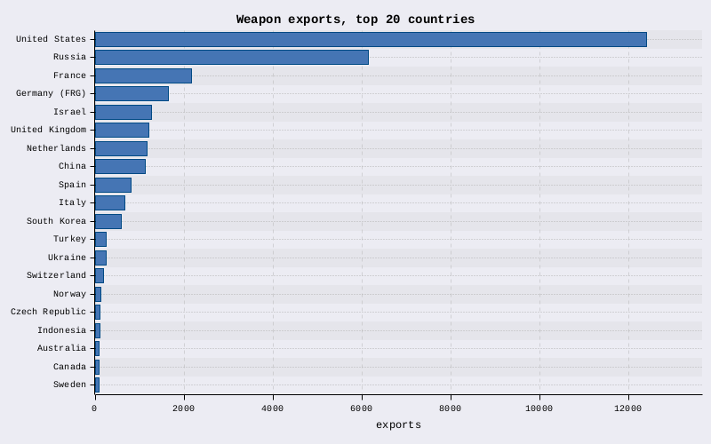
32.1.2 Colour, outline and width
:color fills, :stroke-color / :stroke-width outline (default: the fill darkened), :width - the share of the band a bar takes.
Source: R Graph Gallery - Basic barplot with ggplot2; Custom barplot layout (1, 2). Data: Weapon exports by country, data-to-viz example dataset 7_OneCatOneNum (Yan Holtz); licence: MIT (data_to_viz repository).
(plot/render-image
(plot/arrange
(vec (for [[title opts] [[":color" {:color [215 48 39]}]
[":stroke-color, :stroke-width" {:color :white :stroke-color [33 102 172] :stroke-width 2}]
[":width 0.4" {:width 0.4}]]]
{:data top-10
:mapping {:x :country :y :value}
:theme {:axis {:x {:label-rotation -90}}}
:charts [(chart/bar opts)]
:labels {:title title :x nil :y nil}}))
{:columns 3})
{:width 1000 :height 400})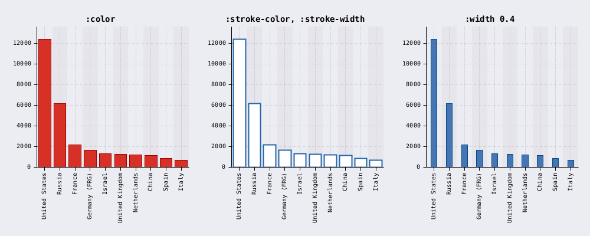
32.1.3 Horizontal and vertical bars
The mapping orients the bars: the countries on :x - vertical bars (tick labels turned -45°), on :y - horizontal ones, which keep long labels readable.
Source: R Graph Gallery - Barplot; data-to-viz - Barplot (1, 2). Data: Weapon exports by country, data-to-viz example dataset 7_OneCatOneNum (Yan Holtz); licence: MIT (data_to_viz repository).
(plot/render-image
(plot/arrange
[{:data top-10 :mapping {:x :country :y :value}
:theme {:axis {:x {:label-rotation -45}}}
:charts [(chart/bar)]
:labels {:title "{:x :country :y :value}" :x nil :y "exports"}}
{:data (rseq top-10) :mapping {:x :value :y :country}
:charts [(chart/bar)]
:labels {:title "{:x :value :y :country}" :x "exports" :y nil}}]
{:columns 2})
{:width 1000 :height 450})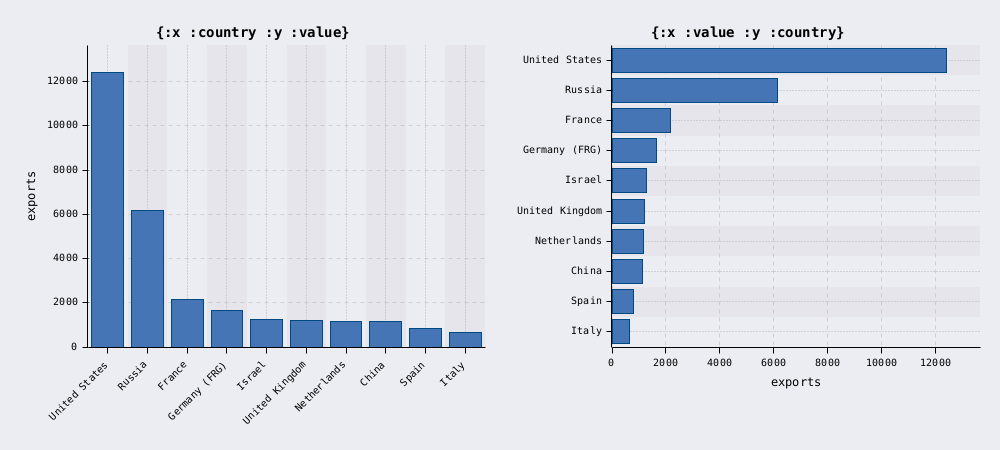
32.1.4 Order by value
Levels follow the data (the first level at the bottom of horizontal bars - :reverse true turns the axis, so the alphabetical data reads from the top); :order-by orders them by value, so the ranking reads from the top.
Source: R Graph Gallery - Reorder a variable with ggplot2. Data: Weapon exports by country, data-to-viz example dataset 7_OneCatOneNum (Yan Holtz); licence: MIT (data_to_viz repository).
(plot/render-image
(plot/arrange
[{:data (sort-by :country top-20) :mapping {:x :value :y :country}
:scales {:y {:reverse true}}
:charts [(chart/bar)]
:labels {:title "Alphabetical (data order, :reverse)" :x "exports" :y nil}}
{:data top-20 :mapping {:x :value :y :country}
:scales {:y {:order-by level-value}}
:charts [(chart/bar)]
:labels {:title "By value (:order-by)" :x "exports" :y nil}}]
{:columns 2})
{:width 1000 :height 500})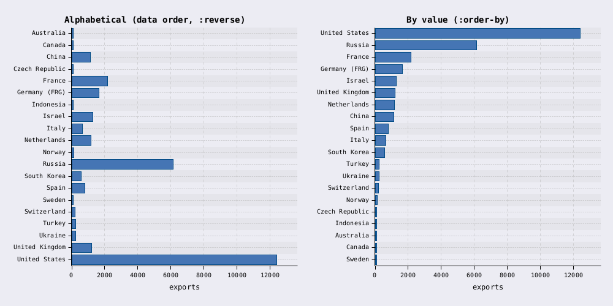
32.1.5 Variable width
:varwidth true - bar widths by the square root of the number of rows (as box plots), :n-label writes the counts: mean fuel economy per number of cylinders, 11, 7 and 14 cars. The cylinder counts are numbers, declared categorical with levels/categorical.
Source: R Graph Gallery - Barplot with variable width. Data: Motor Trend car road tests (1974), R datasets package mtcars (Henderson & Velleman 1981); licence: Part of R (GPL-2 | GPL-3).
(plot/render-image
{:data mtcars
:mapping {:x (levels/categorical :cyl) :y :mpg}
:charts [(chart/bar {:stat :mean :varwidth true :n-label true})]
:labels {:title "Mean fuel economy, widths by the number of cars" :x "cylinders" :y "mean miles per gallon"}}
{:width 800 :height 400})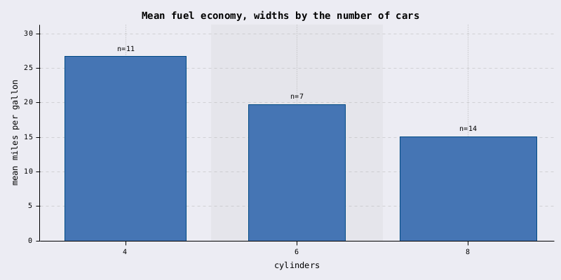
32.1.6 Error bars
chart/extent with the bars’ mapping takes the same slots: mean bars with ± one standard deviation.
Source: R Graph Gallery - Barplot with error bars. Data: Edgar Anderson’s iris measurements, R datasets package iris (Anderson 1935; Fisher 1936); licence: Part of R (GPL-2 | GPL-3).
(plot/render-image
(plot/arrange
(vec (for [k [:sepal-length :petal-length]]
{:data iris :mapping {:x :species :y k}
:charts [(chart/bar {:stat :mean :color [120 160 200]})
(chart/extent {:method :stddev :center :none :color [40 40 40] :line-width 1.5})]
:labels {:title (str "Mean " (name k) " ± sd") :x nil :y "cm"}}))
{:columns 2})
{:width 900 :height 400})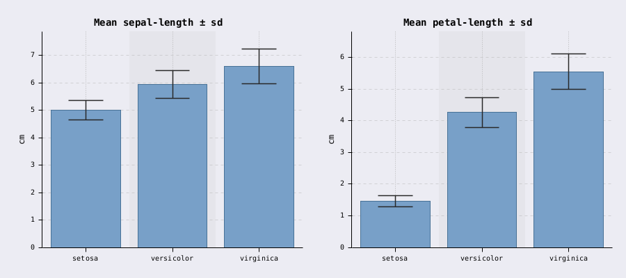
32.1.7 Black-and-white bars
Patterns tell groups apart without colour: :pattern maps a variable to the theme’s pattern set (a legend included); a literal :pattern textures every bar. Histograms, densities, areas, ribbons, smooth bands, rects, boxes, violins, candlesticks, treemaps, partitions, packs, waffles and radar fills take patterns too.
Source: R Graph Gallery - Black and white barchart. Data: Prices and attributes of round cut diamonds, R ggplot2 package diamonds (Wickham et al.); licence: MIT (ggplot2).
(plot/render-image
(plot/arrange
[{:data (filter #(#{"Fair" "Good" "Ideal"} (:cut %)) diamonds)
:mapping {:x :clarity :pattern :cut}
:scales {:x {:domain clarities} :pattern {:domain ["Fair" "Good" "Ideal"]}}
:charts [(chart/bar {:stat :count :color :white :stroke-color :black :pattern-color :black})]
:labels {:title "Diamonds per clarity, :pattern by cut" :x nil :y "count"}}
{:data top-10 :mapping {:x :country :y :value}
:theme {:axis {:x {:label-rotation -90}}}
:charts [(chart/bar {:color :white :stroke-color :black :pattern :hatch :pattern-color :black})]
:labels {:title "A literal :pattern :hatch" :x nil :y "exports"}}]
{:columns 2 :widths [3 2]})
{:width 1000 :height 450})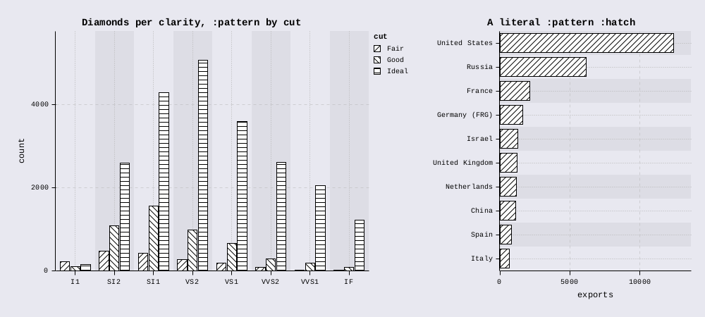
32.1.8 Value labels
:value-label true writes each bar’s length past its end - above vertical bars, beside horizontal ones.
Source: R Graph Gallery - Barplot with number of observations. Data: Weapon exports by country, data-to-viz example dataset 7_OneCatOneNum (Yan Holtz); licence: MIT (data_to_viz repository).
(plot/render-image
(plot/arrange
[{:data top-10 :mapping {:x :country :y :value}
:theme {:axis {:x {:label-rotation -45}}}
:charts [(chart/bar {:value-label true})]
:labels {:title "Vertical" :x nil :y "exports"}}
{:data (rseq top-10) :mapping {:x :value :y :country}
:charts [(chart/bar {:value-label true})]
:labels {:title "Horizontal" :x "exports" :y nil}}]
{:columns 2})
{:width 1000 :height 450})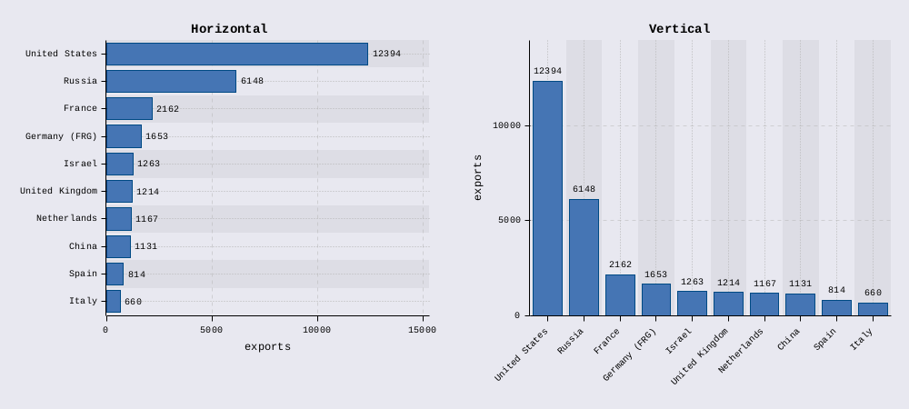
32.1.9 Grouped bars
A second categorical variable on :color dodges the bars inside each band (the default with two or more groups per level).
Source: R Graph Gallery - Grouped, stacked and percent stacked barplot. Data: Prices and attributes of round cut diamonds, R ggplot2 package diamonds (Wickham et al.); licence: MIT (ggplot2).
(plot/render-image
{:data diamonds
:mapping {:x :clarity :color :cut}
:scales {:x {:domain clarities} :color {:domain cuts}}
:charts [(chart/bar {:stat :count})]
:labels {:title "Diamonds per clarity and cut" :x "clarity" :y "count"}}
{:width 900 :height 450})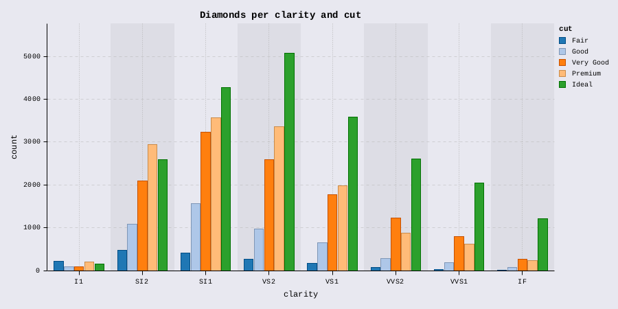
32.1.10 Stacked bars
:position :stack piles the groups up, :normalize scales every stack to 1 (shares).
Source: R Graph Gallery - Grouped, stacked and percent stacked barplot. Data: Prices and attributes of round cut diamonds, R ggplot2 package diamonds (Wickham et al.); licence: MIT (ggplot2).
(plot/render-image
(plot/arrange
(vec (for [p [:stack :normalize]]
{:data diamonds
:mapping {:x :clarity :color :cut}
:scales {:x {:domain clarities} :color {:domain cuts}}
:charts [(chart/bar {:stat :count :position p})]
:labels {:title (str ":position " p) :x "clarity"}}))
{:columns 2})
{:width 1000 :height 450})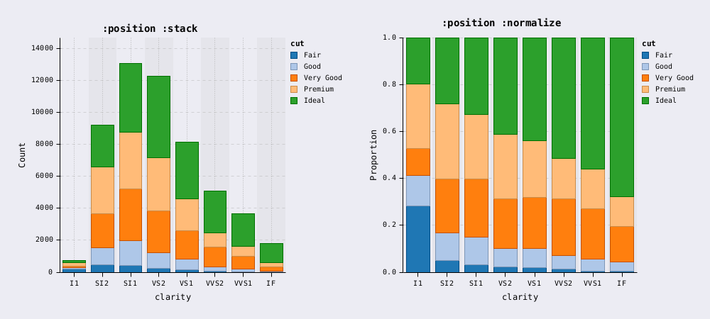
32.1.11 Mirrored bars
The bar :mirror turns the second level of a two-level variable the other way: back-to-back bars, with value tick labels as magnitudes. Answers for and against eight proposals, stacked by how sure people were: the mirror on :group (for / against), four colours - two blues, two reds - on :color.
(def votes
"Seeded answers to eight proposals: people for and against, sure or leaning."
(let [rng (r/rng :mersenne 5)]
(vec (for [i (range 8)
:let [support (+ 20 (r/irandom rng 60))]
[answer share] [["for" support] ["against" (- 100 support)]]
[certainty f] [["sure" 0.6] ["leaning" 0.4]]]
{:proposal (str "proposal " (inc i)) :answer answer :certainty certainty
:answer-certainty (str answer ", " certainty) :people (long (* f share 12))}))))| proposal | answer | certainty | answer-certainty | people |
|---|---|---|---|---|
| proposal 1 | for | sure | for, sure | 532 |
| proposal 1 | for | leaning | for, leaning | 355 |
| proposal 1 | against | sure | against, sure | 187 |
| proposal 1 | against | leaning | against, leaning | 124 |
| proposal 2 | for | sure | for, sure | 230 |
| proposal 2 | for | leaning | for, leaning | 153 |
| proposal 2 | against | sure | against, sure | 489 |
| proposal 2 | against | leaning | against, leaning | 326 |
| proposal 3 | for | sure | for, sure | 208 |
| proposal 3 | for | leaning | for, leaning | 139 |
| proposal 3 | against | sure | against, sure | 511 |
| proposal 3 | against | leaning | against, leaning | 340 |
| proposal 4 | for | sure | for, sure | 208 |
| proposal 4 | for | leaning | for, leaning | 139 |
| proposal 4 | against | sure | against, sure | 511 |
| proposal 4 | against | leaning | against, leaning | 340 |
| proposal 5 | for | sure | for, sure | 144 |
| proposal 5 | for | leaning | for, leaning | 96 |
| proposal 5 | against | sure | against, sure | 576 |
| proposal 5 | against | leaning | against, leaning | 384 |
| proposal 6 | for | sure | for, sure | 446 |
| proposal 6 | for | leaning | for, leaning | 297 |
| proposal 6 | against | sure | against, sure | 273 |
| proposal 6 | against | leaning | against, leaning | 182 |
| proposal 7 | for | sure | for, sure | 403 |
| proposal 7 | for | leaning | for, leaning | 268 |
| proposal 7 | against | sure | against, sure | 316 |
| proposal 7 | against | leaning | against, leaning | 211 |
| proposal 8 | for | sure | for, sure | 417 |
| proposal 8 | for | leaning | for, leaning | 278 |
| proposal 8 | against | sure | against, sure | 302 |
| proposal 8 | against | leaning | against, leaning | 201 |
Source: R Graph Gallery - Barplot (back-to-back bars).
(plot/render-image
{:data votes
:mapping {:x :proposal :y :people :color :answer-certainty :group :answer}
:scales {:color {:domain ["for, sure" "for, leaning" "against, sure" "against, leaning"]
:range {"for, sure" [8 69 148] "for, leaning" [107 174 214]
"against, sure" [165 15 21] "against, leaning" [251 106 74]}}}
:charts [(chart/bar {:mirror :group :position :stack})]
:labels {:title "For (up) and against (down), sure and leaning" :x nil :y "people"}}
{:width 900 :height 450})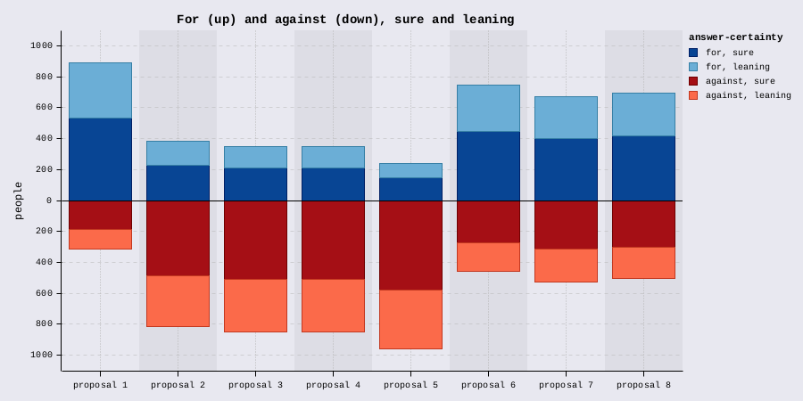
32.1.12 Economist-style labelled bars
No axes - the labels carry the values: name and value inside the bar at its base when they fit (a text chart at x = 0, in white), else just past the bar’s end. Whether a label fits is estimated here: about 7 pixels per character against the bar’s share of a 700 pixel panel.
Source: R Graph Gallery - Horizontal barplot with labels (The Economist style). Data: Weapon exports by country, data-to-viz example dataset 7_OneCatOneNum (Yan Holtz); licence: MIT (data_to_viz repository).
(let [rows (mapv #(assoc % :label (str (:country %) " " (:value %))) top-10)
longest (double (reduce max (map :value rows)))
fits? (fn [{:keys [value label]}] (> (* 700.0 (/ (double value) longest)) (+ 12.0 (* 7.0 (count label)))))
text (fn [rows x anchor color] (chart/text {:data rows :mapping {:x x :y :country :label :label}
:anchor anchor :offset [6 0] :color color}))]
(plot/render-image
{:data rows
:mapping {:x :value :y :country}
:scales {:y {:order-by level-value :axis false} :x {:axis false}}
:theme {:panel {:grid {:x :none :y :none :bands-fill :none}}}
:charts [(chart/bar {:color [0 104 139] :stroke-color :none :width 0.7})
(text (filterv fits? rows) (constantly 0) [:left :middle] :white)
(text (filterv (complement fits?) rows) :value [:left :middle] [0 104 139])]
:labels {:title {:text "Weapon exports\nTop 10 countries, value of exports" :align [:left :middle]} :x nil :y nil}}
{:width 800 :height 450}))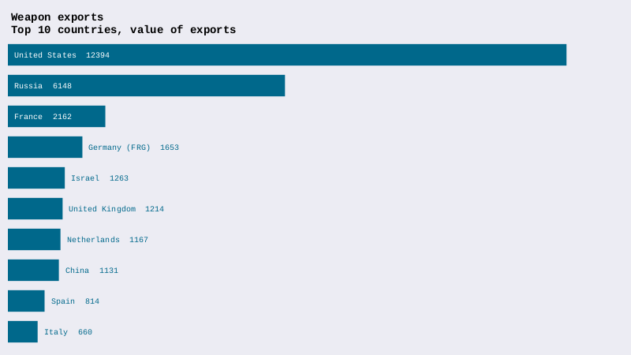
32.2 Lollipop and dot plots
A thin stem and a point carry the value with less ink than a bar: chart/segment from the baseline under a chart/scatter.
32.2.1 Lollipop
Stems from 0 ((chart/segment {:xend 0})), styled stems and markers, and a baseline at the mean - stems grow both ways.
Source: R Graph Gallery - Basic lollipop plot; Custom lollipop chart; data-to-viz - Lollipop (1, 2, 3). Data: Weapon exports by country, data-to-viz example dataset 7_OneCatOneNum (Yan Holtz); licence: MIT (data_to_viz repository).
(let [mean (stats/mean (map :value top-20))
base {:data top-20 :mapping {:x :value :y :country} :scales {:y {:order-by level-value}}}]
(plot/render-image
(plot/arrange
[(assoc base :charts [(chart/segment {:xend 0}) (chart/scatter)]
:labels {:title "Basic" :x "exports" :y nil})
(assoc base :charts [(chart/segment {:xend 0 :color [150 150 150] :line-width 2})
(chart/scatter {:size 9 :color [215 48 39] :shape \s})]
:labels {:title "Styled stems and markers" :x "exports" :y nil})
(assoc base :charts [(chart/rule {:x mean :dash :dashed})
(chart/segment {:xend mean :color [150 150 150]})
(chart/scatter {:size 7 :color [33 102 172]})]
:labels {:title "Baseline at the mean" :x "exports" :y nil})]
{:columns 3})
{:width 1000 :height 500}))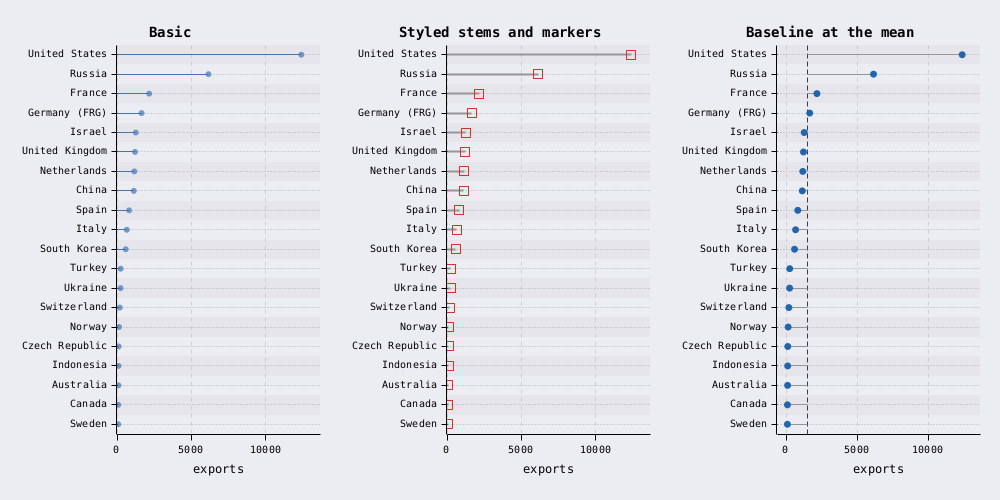
32.2.2 Cleveland dot plot and dumbbell
Two values per item: dots alone (Cleveland), or joined by a segment from one to the other (dumbbell), ordered by the second value.
(def scores
"Seeded scores of twelve teams in two seasons."
(let [rng (r/rng :mersenne 11)]
(vec (for [i (range 12)
:let [v1 (+ 30 (r/irandom rng 50))]]
{:team (str "team " (char (+ 65 i))) :season-1 v1 :season-2 (+ v1 -15 (r/irandom rng 35))}))))| team | season-1 | season-2 |
|---|---|---|
| team A | 45 | 33 |
| team B | 76 | 87 |
| team C | 63 | 48 |
| team D | 67 | 64 |
| team E | 46 | 31 |
| team F | 74 | 62 |
| team G | 62 | 73 |
| team H | 50 | 69 |
| team I | 39 | 41 |
| team J | 60 | 75 |
| team K | 47 | 64 |
| team L | 67 | 52 |
Source: R Graph Gallery - Lollipop chart with 2 values.
(let [by-season-2 {:y {:order-by #(:season-2 (first %))}}
dots (fn [k color] (chart/scatter {:mapping {:x k :y :team} :size 8 :color color}))]
(plot/render-image
(plot/arrange
[{:data scores :scales by-season-2
:charts [(dots :season-2 [33 102 172])]
:labels {:title "Cleveland dot plot: season 2" :x "score" :y nil}}
{:data scores :scales by-season-2
:charts [(chart/segment {:mapping {:x :season-1 :xend :season-2 :y :team} :color [170 170 170] :line-width 2})
(dots :season-1 [150 150 150]) (dots :season-2 [33 102 172])]
:labels {:title "Dumbbell: season 1 (grey) to season 2 (blue)" :x "score" :y nil}}]
{:columns 2})
{:width 1000 :height 450}))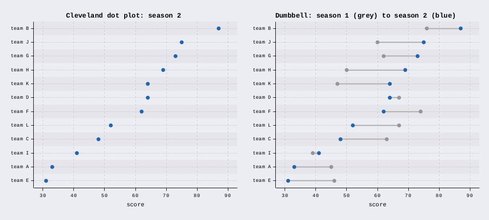
32.2.3 Conditional colour and highlight
A derived column colours the lollipops above and below a threshold; a level map keeps one country in colour and greys the rest.
Source: R Graph Gallery - Lollipop chart with conditional color. Data: Weapon exports by country, data-to-viz example dataset 7_OneCatOneNum (Yan Holtz); licence: MIT (data_to_viz repository).
(let [mean (stats/mean (map :value top-20))
rows (mapv #(assoc % :side (if (> (double (:value %)) mean) "above the mean" "below the mean")
:highlight (if (= "Germany (FRG)" (:country %)) "Germany (FRG)" "others"))
top-20)
base {:data rows :scales {:y {:order-by level-value}}}]
(plot/render-image
(plot/arrange
[(assoc base :mapping {:x :value :y :country :color :side}
:charts [(chart/segment {:xend mean}) (chart/scatter {:size 7})]
:labels {:title "Above / below the mean" :x "exports" :y nil})
(assoc base :mapping {:x :value :y :country :color :highlight}
:scales (assoc (:scales base) :color {:range {"Germany (FRG)" [215 48 39] "others" [190 190 190]}})
:charts [(chart/segment {:xend 0}) (chart/scatter {:size 7})]
:labels {:title "One country highlighted" :x "exports" :y nil})]
{:columns 2})
{:width 1000 :height 500}))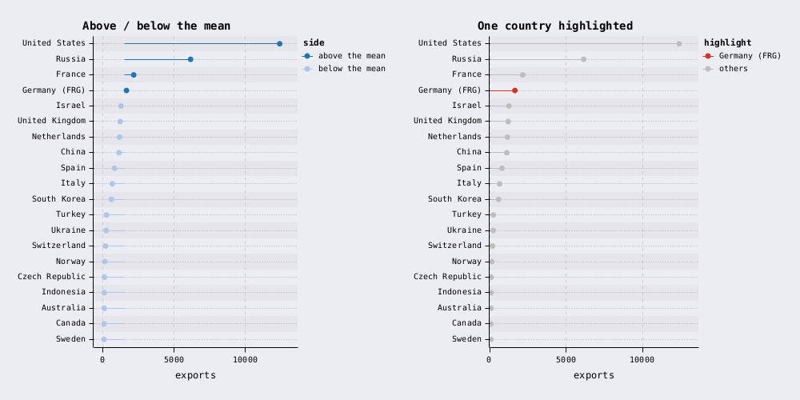
32.2.4 Lollipop with subgroups
Items of five groups, coloured by group and ordered by value inside each group.
(def products
"Seeded sales of six products in each of five shops."
(let [rng (r/rng :mersenne 17)]
(vec (for [shop ["North" "South" "East" "West" "Centre"] i (range 6)]
{:shop shop :product (str shop " " (inc i)) :sales (+ 10 (r/irandom rng 90))}))))| shop | product | sales |
|---|---|---|
| North | North 1 | 92 |
| North | North 2 | 66 |
| North | North 3 | 39 |
| North | North 4 | 15 |
| North | North 5 | 37 |
| North | North 6 | 82 |
| South | South 1 | 48 |
| South | South 2 | 92 |
| South | South 3 | 24 |
| South | South 4 | 19 |
| South | South 5 | 33 |
| South | South 6 | 49 |
| East | East 1 | 37 |
| East | East 2 | 78 |
| East | East 3 | 71 |
| East | East 4 | 18 |
| East | East 5 | 90 |
| East | East 6 | 19 |
| West | West 1 | 13 |
| West | West 2 | 47 |
| West | West 3 | 83 |
| West | West 4 | 28 |
| West | West 5 | 28 |
| West | West 6 | 65 |
| Centre | Centre 1 | 40 |
| Centre | Centre 2 | 60 |
| Centre | Centre 3 | 50 |
| Centre | Centre 4 | 53 |
| Centre | Centre 5 | 65 |
| Centre | Centre 6 | 50 |
Source: data-to-viz - Lollipop (subgroups).
(let [order (mapv :product (sort-by (juxt :shop :sales) products))]
(plot/render-image
{:data products
:mapping {:x :sales :y :product :color :shop}
:scales {:y {:domain order}}
:charts [(chart/segment {:xend 0}) (chart/scatter {:size 7})]
:labels {:title "Sales of six products per shop" :x "sales" :y nil}}
{:width 800 :height 700}))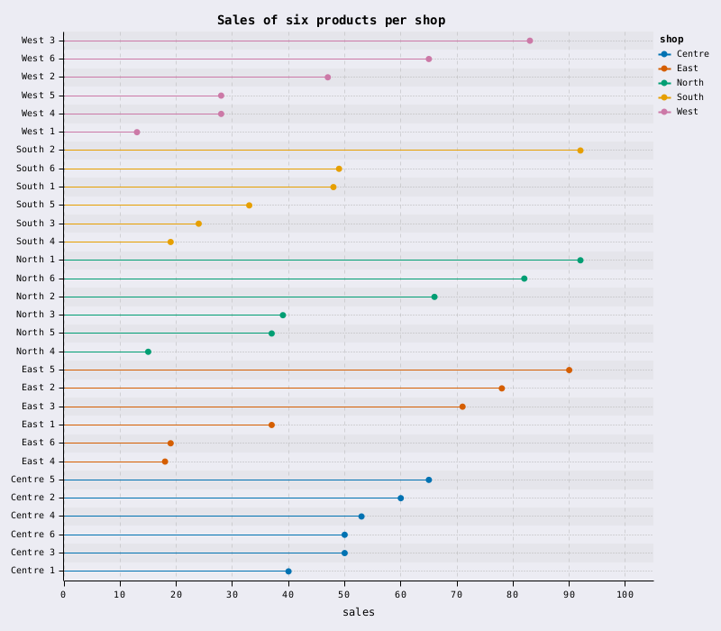
32.3 Circular barplot
Bars in polar coordinates: with :coord {:kind :polar} the horizontal axis goes around the circle - the levels on :x - and the vertical one along the radius; :inner leaves a hole.
32.3.1 Circular barplot: labels, order, gaps
Ordered bars with labels along their angle (:rotation :radial), and gaps between groups - blank levels in an explicit domain, their tick labels hidden by a formatter.
(def shop-groups
"Seeded values of items in three groups."
(let [rng (r/rng :mersenne 12)]
(vec (for [[g n] [["A" 6] ["B" 5] ["C" 7]] i (range n)]
{:group g :item (str g (inc i)) :value (+ 10 (r/irandom rng 90))}))))| group | item | value |
|---|---|---|
| A | A1 | 46 |
| A | A2 | 23 |
| A | A3 | 39 |
| A | A4 | 62 |
| A | A5 | 28 |
| A | A6 | 40 |
| B | B1 | 51 |
| B | B2 | 14 |
| B | B3 | 12 |
| B | B4 | 20 |
| B | B5 | 43 |
| C | C1 | 66 |
| C | C2 | 78 |
| C | C3 | 35 |
| C | C4 | 70 |
| C | C5 | 85 |
| C | C6 | 81 |
| C | C7 | 67 |
Source: R Graph Gallery - Basic circular barplot; Labels; Circular barplot with groups; data-to-viz - Circular barplot (1, 2, 3, 4). Data: Weapon exports by country, data-to-viz example dataset 7_OneCatOneNum (Yan Holtz); licence: MIT (data_to_viz repository).
(let [levels (vec (mapcat (fn [g] (concat (map :item (filter #(= g (:group %)) shop-groups)) [(str "_" g)])) ["A" "B" "C"]))]
(plot/render-image
(plot/arrange
[{:data top-20 :mapping {:x :country :y :value}
:coord {:kind :polar :inner 0.3}
:scales {:x {:order-by level-value :axis false} :y {:axis false :domain [0 26000]}}
:charts [(chart/bar {:color [33 102 172] :stroke-color :none})
(chart/text {:mapping {:x :country :y :value :label :country} :rotation :radial :size 8})]
:labels {:title "Ordered, radial labels" :x nil :y nil}}
{:data shop-groups :mapping {:x :item :y :value :color :group}
:coord {:kind :polar :inner 0.2}
:scales {:x {:domain levels :formatter (fn [v] (if (= \_ (first (str v))) "" (str v)))}}
:charts [(chart/bar)]
:labels {:title "Gaps between groups" :x nil :y nil}}]
{:columns 2})
{:width 1000 :height 500}))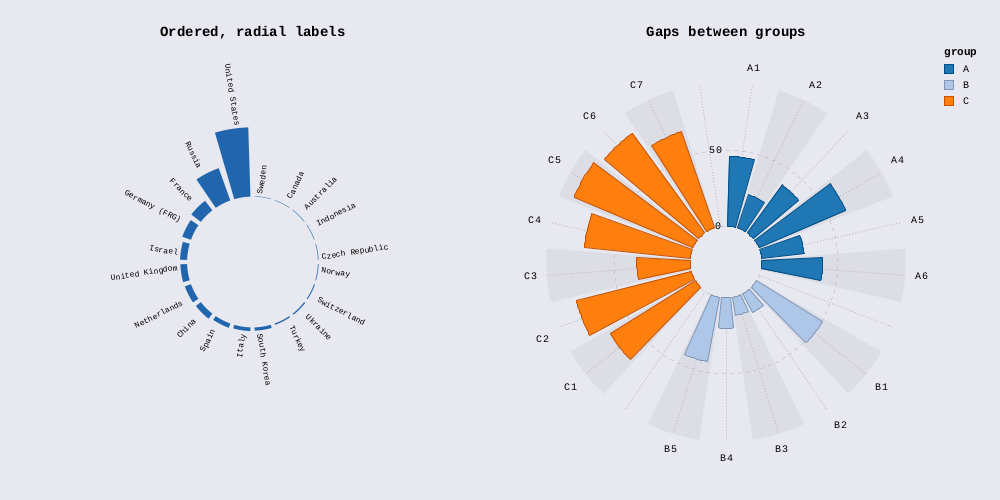
32.3.2 Stacked and dodged circular bars
The bar positions work around the circle too.
(def parts
"Seeded values of three parts of twelve items."
(let [rng (r/rng :mersenne 23)]
(vec (for [i (range 12) part ["x" "y" "z"]]
{:item (str "item " (inc i)) :part part :value (+ 5 (r/irandom rng 30))}))))| item | part | value |
|---|---|---|
| item 1 | x | 17 |
| item 1 | y | 31 |
| item 1 | z | 21 |
| item 2 | x | 17 |
| item 2 | y | 13 |
| item 2 | z | 14 |
| item 3 | x | 20 |
| item 3 | y | 13 |
| item 3 | z | 31 |
| item 4 | x | 7 |
| item 4 | y | 10 |
| item 4 | z | 13 |
| item 5 | x | 23 |
| item 5 | y | 29 |
| item 5 | z | 5 |
| item 6 | x | 6 |
| item 6 | y | 34 |
| item 6 | z | 33 |
| item 7 | x | 17 |
| item 7 | y | 7 |
| item 7 | z | 21 |
| item 8 | x | 31 |
| item 8 | y | 12 |
| item 8 | z | 20 |
| item 9 | x | 29 |
| item 9 | y | 31 |
| item 9 | z | 13 |
| item 10 | x | 22 |
| item 10 | y | 12 |
| item 10 | z | 26 |
| item 11 | x | 34 |
| item 11 | y | 30 |
| item 11 | z | 17 |
| item 12 | x | 32 |
| item 12 | y | 9 |
| item 12 | z | 17 |
Source: R Graph Gallery - Circular stacked barplot.
(plot/render-image
(plot/arrange
(vec (for [p [:stack :dodge]]
{:data parts :mapping {:x :item :y :value :color :part}
:coord {:kind :polar :inner 0.15}
:charts [(chart/bar {:position p})]
:labels {:title (str ":position " p) :x nil :y nil}}))
{:columns 2})
{:width 1000 :height 500})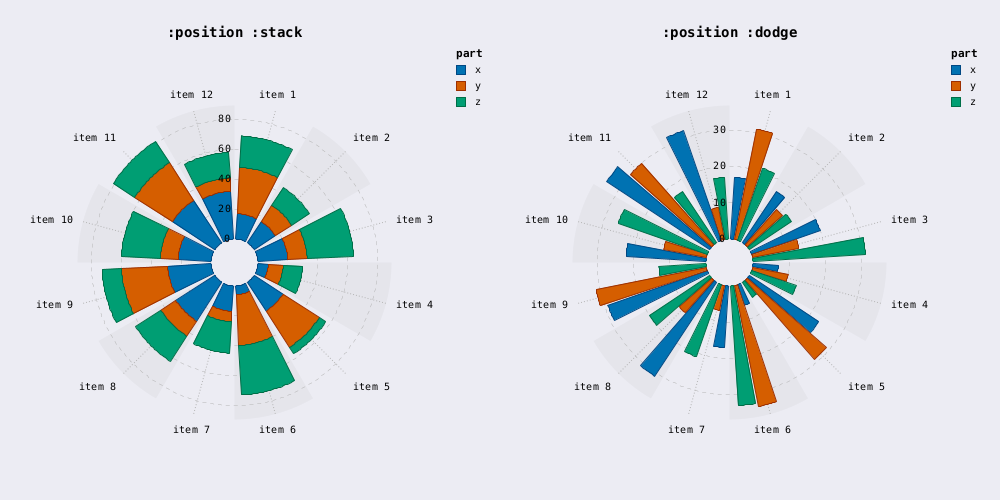
32.3.3 Circular lollipop
Segments and points in polar coordinates: the levels on the angle (:x), the values on the radius - on a log scale (stems from 50), so the small values don’t crowd the centre.
Source: R Graph Gallery - Circular barplot. Data: Weapon exports by country, data-to-viz example dataset 7_OneCatOneNum (Yan Holtz); licence: MIT (data_to_viz repository).
(plot/render-image
{:data top-20 :mapping {:x :country :y :value}
:coord {:kind :polar :start -9}
:scales {:x {:order-by level-value :descending true} :y {:kind :log}}
:charts [(chart/segment {:yend 50 :color [150 150 150]}) (chart/scatter {:size 8 :color [215 48 39]})]
:labels {:title "Weapon exports, top 20" :x nil :y nil}}
{:width 600 :height 600})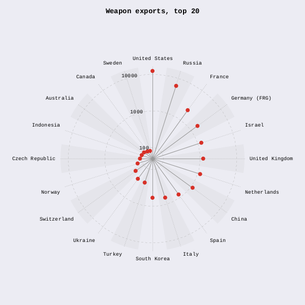
32.4 Parallel coordinates
Each row a line across one axis per variable (chart/parallel over :variables); every axis has its own scale in the variable’s units, drawn by the chart.
(def iris-variables [:sepal-length :sepal-width :petal-length :petal-width])32.4.1 Parallel coordinates: groups, highlight, vertical
Lines coloured by species; a level map greys all but one species; :flip true stacks the axes vertically.
Source: R Graph Gallery - Parallel coordinates chart with ggally; data-to-viz - Parallel coordinates (1, 2). Data: Edgar Anderson’s iris measurements, R datasets package iris (Anderson 1935; Fisher 1936); licence: Part of R (GPL-2 | GPL-3).
(plot/render-image
(plot/arrange
[{:data iris :mapping {:color :species}
:charts [(chart/parallel {:variables iris-variables})]
:labels {:title "By species" :x nil}}
{:data iris :mapping {:color :species}
:scales {:color {:range {"setosa" [190 190 190 120] "versicolor" [190 190 190 120] "virginica" [215 48 39 220]}}}
:charts [(chart/parallel {:variables iris-variables})]
:labels {:title "Virginica highlighted" :x nil}}
{:data iris :mapping {:color :species} :flip true
:charts [(chart/parallel {:variables iris-variables})]
:labels {:title "Vertical (:flip true)" :x nil}}]
{:columns 2})
{:width 1000 :height 800})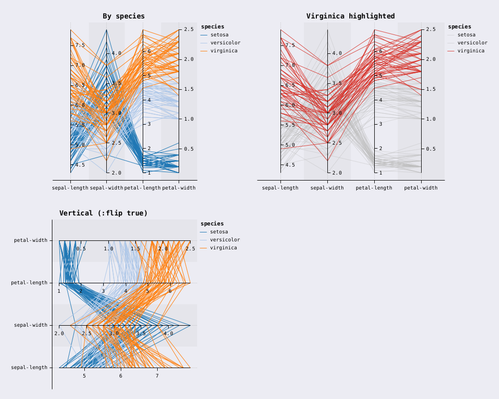
32.4.2 Smooth connections
:curve :smooth joins the axes with curves that meet every axis flat, at its value, and never overshoot; :smoothness (0..1) moves the bend toward the axes.
Source: R Graph Gallery - Parallel plot. Data: Edgar Anderson’s iris measurements, R datasets package iris (Anderson 1935; Fisher 1936); licence: Part of R (GPL-2 | GPL-3).
(plot/render-image
(plot/arrange
(vec (for [[title opts] [["Straight" {}] [":curve :smooth" {:curve :smooth}]]]
{:data (take-nth 3 iris) :mapping {:color :species} :legend false
:charts [(chart/parallel (merge {:variables iris-variables} opts))]
:labels {:title title :x nil}}))
{:columns 2})
{:width 1000 :height 400})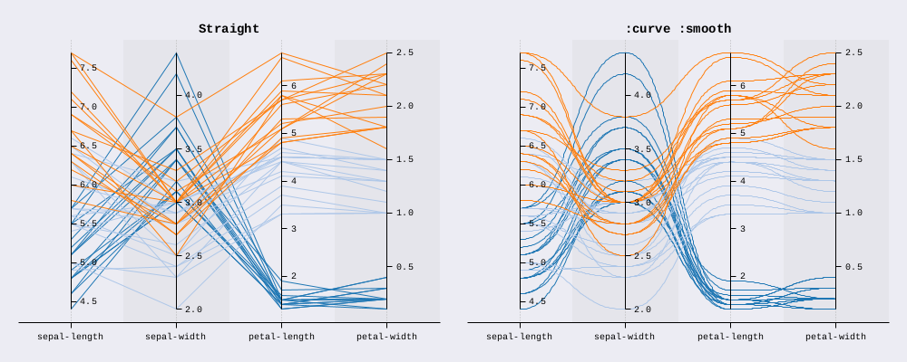
32.4.3 Scaling
:scaling - per variable (v - offset) / scale: :std (mean, sd), :robust (median, R’s mad), :uniminmax (every axis 0..1, the default), :globalminmax (the values as they are, one scale).
Source: R Graph Gallery - Parallel coordinates chart with ggally (scaling). Data: Edgar Anderson’s iris measurements, R datasets package iris (Anderson 1935; Fisher 1936); licence: Part of R (GPL-2 | GPL-3).
(plot/render-image
(plot/arrange
(vec (for [scaling [:std :robust :uniminmax :globalminmax]]
{:data iris :mapping {:color :species} :legend false
:charts [(chart/parallel {:variables iris-variables :scaling scaling :line-width 0.5})]
:labels {:title (str ":scaling " scaling) :x nil}}))
{:columns 2})
{:width 1000 :height 700})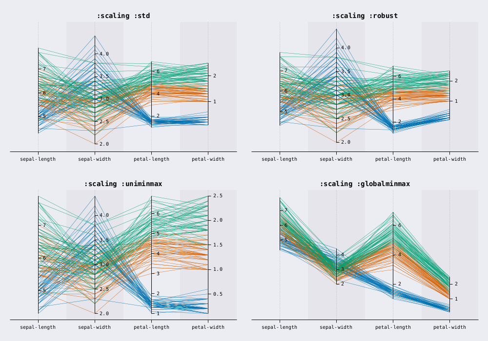
32.4.4 Axis order
The axes follow :variables: neighbours are compared, so the order changes what the chart shows.
Source: data-to-viz - Parallel coordinates (axis order). Data: Edgar Anderson’s iris measurements, R datasets package iris (Anderson 1935; Fisher 1936); licence: Part of R (GPL-2 | GPL-3).
(plot/render-image
(plot/arrange
(vec (for [[title vs] [["Measured order" iris-variables]
["Sepal width beside the petals" [:sepal-width :petal-length :sepal-length :petal-width]]]]
{:data iris :mapping {:color :species} :legend false
:charts [(chart/parallel {:variables vs})]
:labels {:title title :x nil}}))
{:columns 2})
{:width 1000 :height 400})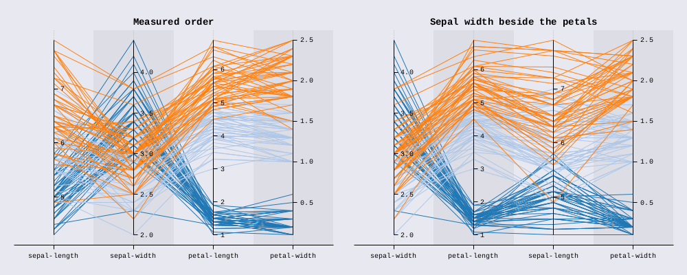
32.5 Radar
A radar (spider) chart is chart/parallel in polar coordinates: variables on angles, values along the spokes, each row a closed polygon - filled with :fill.
(def car-variables [:mpg :hp :wt :qsec :drat :disp])(def four-cars (filterv #(#{"Mazda RX4" "Merc 240D" "Lotus Europa" "Cadillac Fleetwood"} (:model %)) mtcars))| model | mpg | cyl | disp | hp | drat | wt | qsec | vs | am | gear | carb |
|---|---|---|---|---|---|---|---|---|---|---|---|
| Mazda RX4 | 21 | 6 | 160 | 110 | 3.9 | 2.62 | 16.46 | 0 | 1 | 4 | 4 |
| Merc 240D | 24.4 | 4 | 146.7 | 62 | 3.69 | 3.19 | 20 | 1 | 0 | 4 | 2 |
| Cadillac Fleetwood | 10.4 | 8 | 472 | 205 | 2.93 | 5.25 | 17.98 | 0 | 0 | 3 | 4 |
| Lotus Europa | 30.4 | 4 | 95.1 | 113 | 3.77 | 1.513 | 16.9 | 1 | 1 | 5 | 2 |
(def car-limits
"Every variable's range over all 32 cars."
(into {} (map (fn [k] [k [(reduce min (map k mtcars)) (reduce max (map k mtcars))]])) car-variables))32.5.1 Radar: groups and limits
Four cars filled; the same cars on axes fixed to the range of all cars (:limits); all cars by cylinders on standardized axes.
Source: R Graph Gallery - Basic radar chart; Radar chart with several individuals (1, 2). Data: Motor Trend car road tests (1974), R datasets package mtcars (Henderson & Velleman 1981); licence: Part of R (GPL-2 | GPL-3).
(plot/render-image
(plot/arrange
[(plot/arrange
[{:data four-cars :mapping {:color :model} :coord {:kind :polar} :legend false
:charts [(chart/parallel {:variables car-variables :fill :color :line-width 2})]
:labels {:title "Four cars, their own ranges" :x nil}}
{:data four-cars :mapping {:color :model} :coord {:kind :polar}
:charts [(chart/parallel {:variables car-variables :fill :color :line-width 2 :limits car-limits})]
:labels {:title "Ranges of all 32 cars (:limits)" :x nil}}]
{:columns 2 :widths [2 3]})
{:data (map #(assoc % :cylinders (str (long (:cyl %)))) mtcars) :mapping {:color :cylinders} :coord {:kind :polar}
:charts [(chart/parallel {:variables car-variables :scaling :std})]
:labels {:title "All cars by cylinders (:std)" :x nil}}]
{:columns 1 :heights [1 1]})
{:width 1000 :height 800})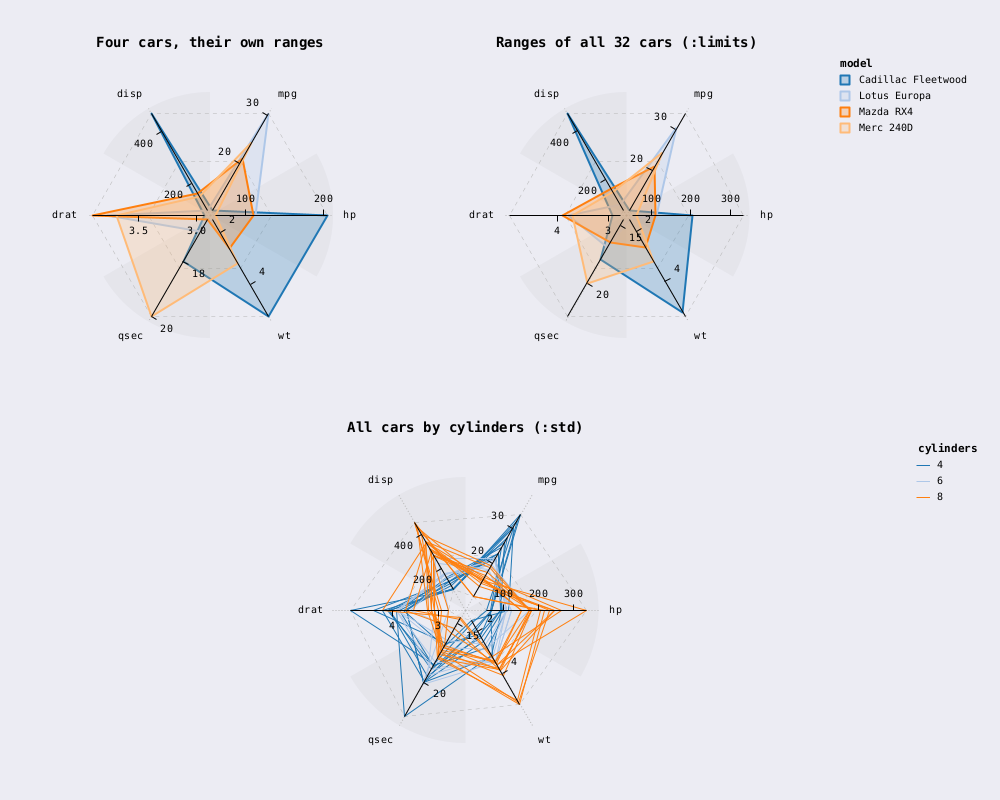
32.5.2 Variables as rings
With :flip true the variables become rings and the values angles: every flower is a line from ring to ring - the species separate on the petal rings and mix on sepal width.
Source: R Graph Gallery - Spider / radar chart. Data: Edgar Anderson’s iris measurements, R datasets package iris (Anderson 1935; Fisher 1936); licence: Part of R (GPL-2 | GPL-3).
(plot/render-image
{:data iris :mapping {:color :species}
:coord {:kind :polar :inner 0.25} :flip true
:scales {:color {:range {"setosa" [27 158 119 110] "versicolor" [217 95 2 110] "virginica" [117 112 179 110]}}}
:charts [(chart/parallel {:variables iris-variables :line-width 0.8})]
:labels {:title "150 iris flowers across four rings" :x nil}}
{:width 750 :height 700})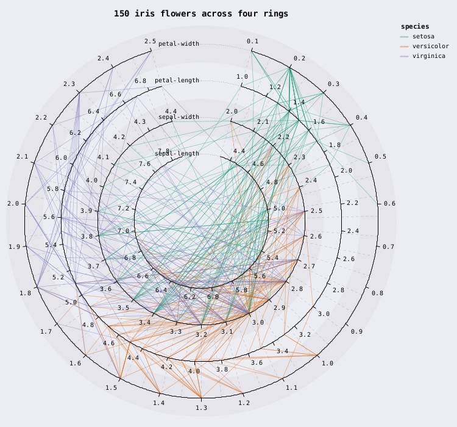
32.6 Bump
A bump chart shows ranks over time - see Evolution - Bump chart (levels/rank-rows, monotone lines, end labels).
32.7 Caveats
32.7.1 Order the data
Unordered categories make the reader sort them; ordered by value, the ranking is read at a glance - here all 38 rows with a value (36 countries, “Others” and “Unknown supplier(s)”), as lollipops on a log scale (exports from 2 to 12394; the stems start at 1, as log 0 is undefined).
Source: data-to-viz - Order your data. Data: Weapon exports by country, data-to-viz example dataset 7_OneCatOneNum (Yan Holtz); licence: MIT (data_to_viz repository).
(plot/render-image
(plot/arrange
(vec (for [[title y-scale] [["Alphabetical" {:reverse true}] ["Ordered by value" {:order-by level-value}]]]
{:data (sort-by :country weapons) :mapping {:x :value :y :country}
:scales {:x {:kind :log} :y y-scale}
:theme {:axis {:y {:label-gap 1}}}
:charts [(chart/segment {:xend 1 :color [150 150 150]}) (chart/scatter {:size 5 :color [33 102 172]})]
:labels {:title title :x "exports (log scale)" :y nil}}))
{:columns 2})
{:width 1000 :height 800})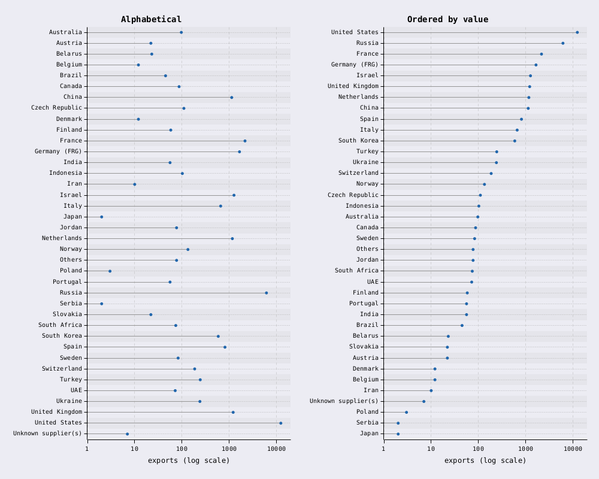
32.7.2 Barplot or histogram
A barplot shows a value per category; a histogram shows how one numeric variable is distributed - bins of a continuous axis, no gaps.
Source: data-to-viz - Barplot; Histogram (1, 2). Data: Prices and attributes of round cut diamonds, R ggplot2 package diamonds (Wickham et al.); licence: MIT (ggplot2).
(plot/render-image
(plot/arrange
[{:data diamonds :mapping {:x :cut} :scales {:x {:domain cuts}}
:charts [(chart/bar {:stat :count})] :labels {:title "Barplot: diamonds per cut" :x nil :y "count"}}
{:data diamonds :mapping {:x :price}
:charts [(chart/histogram)] :labels {:title "Histogram: diamond prices" :x "price, USD"}}]
{:columns 2})
{:width 1000 :height 400})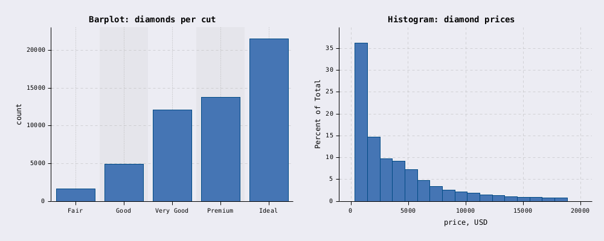
32.7.3 Radar: the order of the axes
The same car in two axis orders: the polygon’s shape and area change with the order, though the values don’t.
Source: data-to-viz - Spider chart caveats. Data: Motor Trend car road tests (1974), R datasets package mtcars (Henderson & Velleman 1981); licence: Part of R (GPL-2 | GPL-3).
(plot/render-image
(plot/arrange
(vec (for [vs [car-variables [:mpg :wt :hp :drat :qsec :disp]]]
{:data (filter #(= "Mazda RX4" (:model %)) mtcars) :coord {:kind :polar}
:charts [(chart/parallel {:variables vs :fill :color :line-width 2 :limits car-limits})]
:labels {:title (str "Mazda RX4: " (str/join " " (map name vs))) :x nil}}))
{:columns 2})
{:width 1000 :height 500})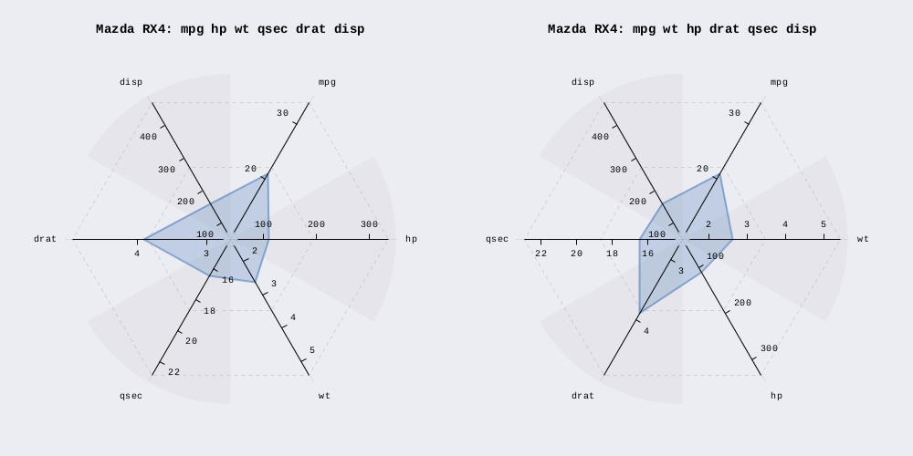
32.7.4 Circular bars exaggerate the outer ones
Around a circle an outer bar is longer than an inner bar of the same value, and the angle of each bar hides its length: the straight bars compare honestly.
Source: data-to-viz - Circular barplot y axis. Data: Weapon exports by country, data-to-viz example dataset 7_OneCatOneNum (Yan Holtz); licence: MIT (data_to_viz repository).
(plot/render-image
(plot/arrange
[{:data top-10 :mapping {:x :country :y :value} :scales {:x {:order-by level-value}}
:coord {:kind :polar :inner 0.2}
:charts [(chart/bar)] :labels {:title "Circular" :x nil :y nil}}
{:data top-10 :mapping {:x :country :y :value} :scales {:x {:order-by level-value}}
:theme {:axis {:x {:label-rotation -45}}}
:charts [(chart/bar)] :labels {:title "Straight" :x nil :y "exports"}}]
{:columns 2})
{:width 1000 :height 500})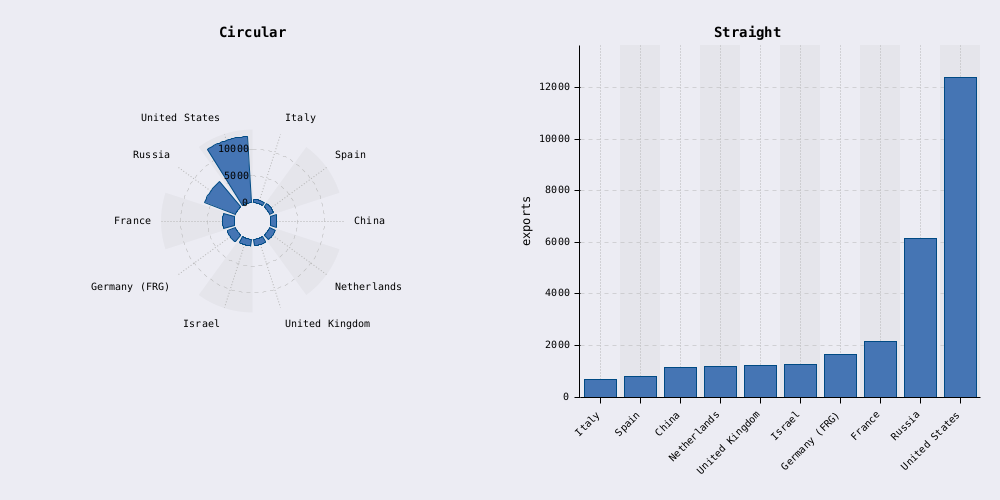
source: notebooks/use_cases/ranking.clj